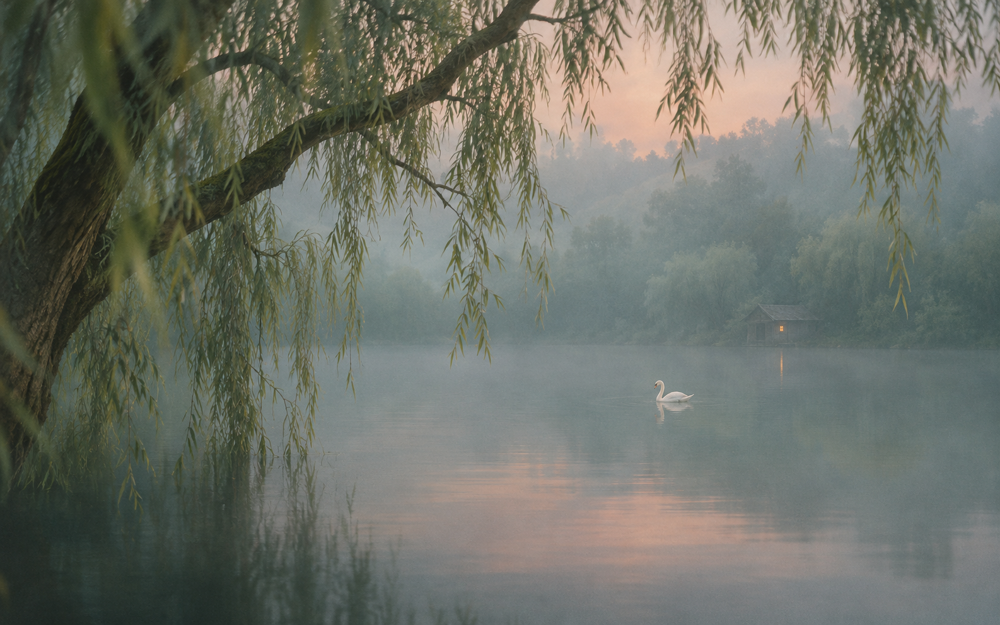
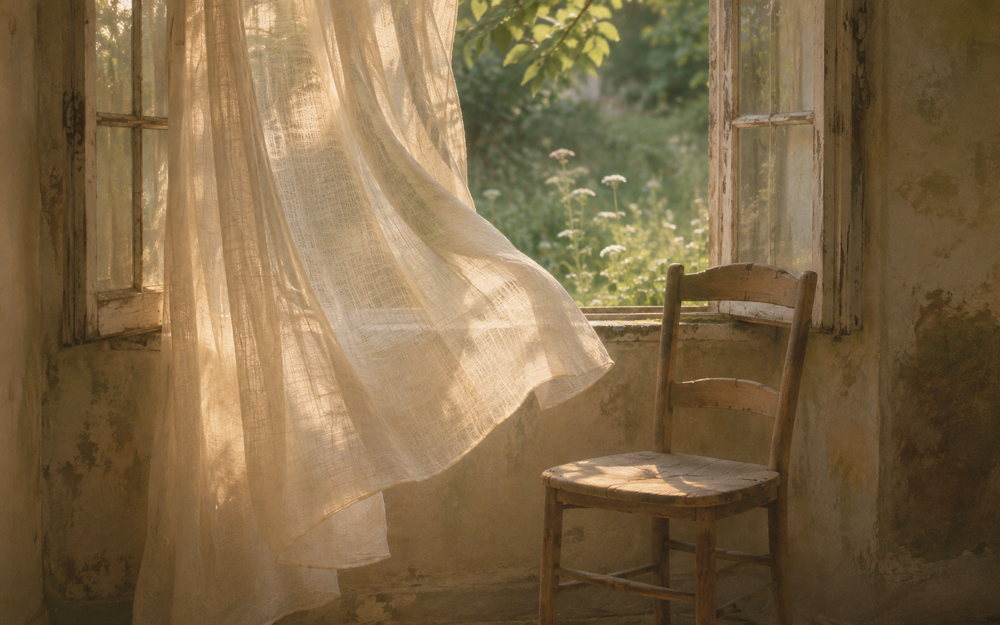
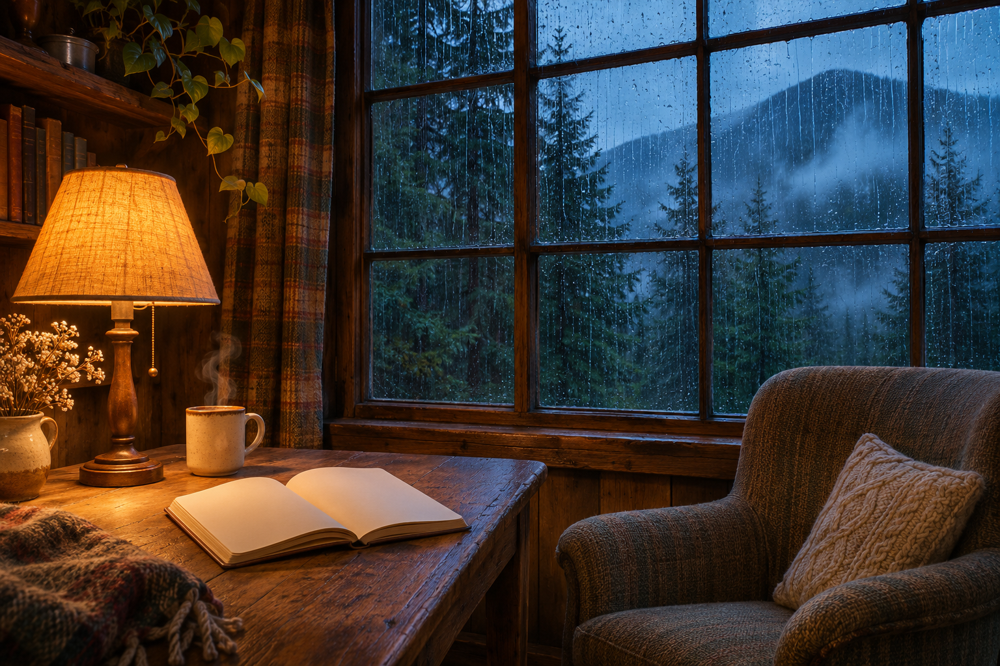

海豚：把一瞬间，组织成一个圆。
海豚弓起的身体与橙色光弧互相回应，右侧水花又把曲线接回海面。橙色倒影向下延伸，让天空中的亮点在水里留下对应。
姿态带着速度，画面却把它定住了。我读到的是轻盈、奔赴与短暂相遇：这个关系稍纵即逝，因此值得多看一眼。
可见依据：弧形身体、橙色光弧、水花和倒影。第一张的光体呈弯月状，不能据此确认是实际日食。

01 / SOMEWHERE, BY THE WATER
风经过柳树。你可以再坐一会儿。
THE CORE REFERENCE / A UNIQUE SHOT


原帖图像研究引用 · rosa / @cozyycabin · A Unique Shot · 查看原帖
让生命的姿态，与宏大的自然发生精确而含蓄的呼应。
惊叹里有安静，孤寂里有联系；情绪由这段关系产生。海豚弓起的身体与橙色光弧互相回应，右侧水花又把曲线接回海面。橙色倒影向下延伸，让天空中的亮点在水里留下对应。
姿态带着速度，画面却把它定住了。我读到的是轻盈、奔赴与短暂相遇：这个关系稍纵即逝，因此值得多看一眼。
可见依据：弧形身体、橙色光弧、水花和倒影。第一张的光体呈弯月状，不能据此确认是实际日食。满月、尾鳍中央与尾柄基本落在同一中轴上。尾鳍向两侧展开，水流像帘幕一样垂下，金色亮边把上方的光与海面联系起来。
月亮没有接触尾鳍，观者却容易把这段上下关系读成承托、接住或回应。对称与下落的水流，让这张更沉静，也更有庄重感。
可见依据：中轴、展开的尾鳍、月尾间隙与金色落水。“托月”是艺术联想，并非画面中的实际接触。两张都保留海面、深色的生命形体、暖色光体和被照亮的水。统一的元素建立系列气质；弧线与中轴、跃起与停驻，又给它们不同的节奏。
左图更像“发生的一瞬”，右图更像“可以凝视的形象”。不完整的光弧与完整圆月并置，也形成形状上的变化。
第一眼会被亮点和动物姿态吸引；继续看，才发现光弧、身体、水和留白之间的安排。观者在脑中完成“相遇”与“承托”，因此有了第二层观看内容。
这里可以容纳惊叹、敬畏、孤寂与柔情。作品没有指定唯一解释，留下了自己代入的空间。
把研究方向明确为诗意、带奇观感的自然关系。后续选图时，观察主体有没有与环境建立一段值得凝视的联系。
先写关系：两条曲线怎样相扣，一个形体如何回应另一个形体。再决定主体、机位、光色与水的细节。
可探索原创图像展、壁纸系列、诗意短片的关键画面。保留少量共同规则，每一幅重新设计姿态与空间关系。这些是我们的应用方向。
隐藏文案后还能否读到关系？裁切是否破坏圆弧或中轴？增加的细节有没有遮住核心姿态？把检查落在可见的画面依据上。
一个有表现力的生命姿态 ＋ 一个与它呼应的自然形状 ＋ 连接二者的光或材质 ＋ 足够的安静空间。
这是从两张图中提炼的创作假设，仍需用自己的新作品检验。分析依据为帖内可公开查看的图片。情绪名称与象征关系是本项目的解读；作者意图、素材原创身份，以及实拍、合成或 AI 制作方式均未核实。
一扇窗。一点光。
一个不必急着离开的地方。
椅子还空着。
没有下一件必须做的事。

有时候，温柔只是给自己留一个位置。
一张图，先让人有了感受。
然后，才值得问它为什么。
本轮的两次原创尝试
湖边垂柳围出一个安静的观看位置，大片水面给视线留出空间。小小的天鹅与远处的一点灯光，让自然里仍有生命与人的痕迹。
午后帘子的柔软曲线与窗框的直线相遇，空椅留下可以代入的位置。旧木、透光的布料与轻微颗粒，让场景带一点时间感。
01 / ACCOUNT & PRODUCT
先认识它在提供什么把公开内容、我们的分析，以及可发展的产品方向分别说清楚。
已经看到：公开内容及可见画面。仍待核实：素材原创身份、制作工具、付费产品与收入。后文的工作台与演示是我们自己做的。
02 / THE EMOTIONAL GRAMMAR
点击案例，展开画面里的关系三个公开样本，三种可迁移的表达。
以下情绪名称是我们的解读。
03 / FEEL IT YOURSELF
实验一 · 调整与盲看用我们的新图像做小样。调整画面线索，
再隐藏解释，记录自己的第一感受。
外面下着雨，里面可以慢下来。
素材为本项目 AI 生成。调色、裁切与雨幕为浏览器预演；参数表示视觉调整量。
暖光、热饮和空椅共同支持“可以停下来”。调整颜色后，也要检查这个关系是否仍然清楚。
04 / WHAT WE TAKE WITH US
对我们的具体价值从审美共识到可交付的作品，
每一种价值都对应一个可以检验的产物。
05 / MAKE IT OURS
实验二 · 作品预览 实验三 · 创作简报原帖给我们关系，本项目做了三张新图。
试着把它们变成海报、短片计划与可带走的简报。
把世界留在窗外一会儿。
0–2 秒 · 看见外面的雨
浏览器对静态图做镜头移动，尚未生成 AI 视频，也未制作音轨。三张示范图由本项目通过内置 Image Gen 生成，生成记录随项目保留。
A SMALL, USEFUL LIBRARY
在案例卡上点“收藏参考”，连同你的主观感受和当前方案一起带走。
0 / 3 条已收藏
SOURCES & SCOPE
资料与适用边界研究基于内置浏览器实际查看的公开主页与少量帖子。缩略图仅作为本地研究引用，保留原帖链接；原作权利属于各自权利人。未验证每条素材的原创身份。
互动预演帮助我们讨论表达选择；盲看记录是个人观察，不能据此推出受众心理效果、稳定传播表现或商业收益。
展览新增两张图像使用内置 Image Gen 生成；原始指令与原件随项目保留。轻微移视由浏览器实现，声音为用户点击后播放的合成风声或雨声。
查看本轮实际生成指令